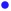

<!doctype html>
<html lang="en">
    <head>
        <meta charset="utf-8">
        <meta http-equiv="X-UA-Compatible" content="IE=edge">
        <meta name="viewport" content="initial-scale=1,user-scalable=no,maximum-scale=1,width=device-width">
        <meta name="mobile-web-app-capable" content="yes">
        <meta name="apple-mobile-web-app-capable" content="yes">
        <link rel="stylesheet" href="css/leaflet.css">
        <link rel="stylesheet" href="css/qgis2web.css">
        <link rel="stylesheet" href="css/leaflet-search.css">
        <link rel="stylesheet" href="css/Control.OSMGeocoder.css">
        <style>
        html, body, #map {
            width: 100%;
            height: 100%;
            padding: 0;
            margin: 0;
        }
        </style>
        <title></title>
    </head>
    <body>
        <div id="map">
        </div>
        <script src="js/qgis2web_expressions.js"></script>
        <script src="js/leaflet.js"></script>
        <script src="js/leaflet.rotatedMarker.js"></script>
        <script src="js/leaflet.pattern.js"></script>
        <script src="js/leaflet-hash.js"></script>
        <script src="js/Autolinker.min.js"></script>
        <script src="js/rbush.min.js"></script>
        <script src="js/labelgun.min.js"></script>
        <script src="js/labels.js"></script>
        <script src="js/Control.OSMGeocoder.js"></script>
        <script src="js/leaflet-search.js"></script>
        <script src="data/QualifiedAreas_0.js"></script>
        <script src="data/GeocodedSiteListsFY17_FY18_1.js"></script>
        <script>
        var map = L.map('map', {
            zoomControl:true, maxZoom:28, minZoom:1
        })
        var hash = new L.Hash(map);
        map.attributionControl.addAttribution('<a href="https://github.com/tomchadwin/qgis2web" target="_blank">qgis2web</a>');
        var bounds_group = new L.featureGroup([]);
        var basemap0 = L.tileLayer('http://{s}.tile.openstreetmap.org/{z}/{x}/{y}.png', {
            attribution: '&copy; <a href="http://openstreetmap.org">OpenStreetMap</a> contributors,<a href="http://creativecommons.org/licenses/by-sa/2.0/">CC-BY-SA</a>',
            maxZoom: 28
        });
        basemap0.addTo(map);
        function setBounds() {
            if (bounds_group.getLayers().length) {
                map.fitBounds(bounds_group.getBounds());
            }
        }
        function pop_QualifiedAreas_0(feature, layer) {
        }

        function style_QualifiedAreas_0_0() {
            return {
                pane: 'pane_QualifiedAreas_0',
                opacity: 1,
                color: 'rgba(0,0,0,0.25)',
                dashArray: '',
                lineCap: 'butt',
                lineJoin: 'miter',
                weight: 1.0, 
                fill: true,
                fillOpacity: 1,
                fillColor: 'rgba(241,152,182,0.25)',
            }
        }
        map.createPane('pane_QualifiedAreas_0');
        map.getPane('pane_QualifiedAreas_0').style.zIndex = 400;
        map.getPane('pane_QualifiedAreas_0').style['mix-blend-mode'] = 'normal';
        var layer_QualifiedAreas_0 = new L.geoJson(json_QualifiedAreas_0, {
            attribution: '<a href=""></a>',
            pane: 'pane_QualifiedAreas_0',
            onEachFeature: pop_QualifiedAreas_0,
            style: style_QualifiedAreas_0_0,
			interactive: false
        });
        bounds_group.addLayer(layer_QualifiedAreas_0);
        map.addLayer(layer_QualifiedAreas_0);
        function pop_GeocodedSiteListsFY17_FY18_1(feature, layer) {
            var popupContent = '<table>\
                    <tr>\
                        <th scope="row">Agency</th>\
                        <td>' + (feature.properties['Agency'] !== null ? Autolinker.link(String(feature.properties['Agency'])) : '') + '</td>\
                    </tr>\
                    <tr>\
                        <th scope="row">Project</th>\
                        <td>' + (feature.properties['Project'] !== null ? Autolinker.link(String(feature.properties['Project'])) : '') + '</td>\
                    </tr>\
                    <tr>\
                        <th scope="row">Name</th>\
                        <td>' + (feature.properties['Name_of_Lo'] !== null ? Autolinker.link(String(feature.properties['Name_of_Lo'])) : '') + '</td>\
                    </tr>\
                    <tr>\
                        <th scope="row">Year</th>\
                        <td>' + (feature.properties['Year'] !== null ? Autolinker.link(String(feature.properties['Year'])) : '') + '</td>\
                    </tr>\
                    <tr>\
                        <th scope="row">Address</th>\
                        <td>' + (feature.properties['FullAdd'] !== null ? Autolinker.link(String(feature.properties['FullAdd'])) : '') + '</td>\
                    </tr>\
                </table>';
            layer.bindPopup(popupContent, {maxHeight: 400});
        }

        function style_GeocodedSiteListsFY17_FY18_1_0(feature) {
            switch(String(feature.properties['Agency'])) {
                case 'DPH':
                    return {
                pane: 'pane_GeocodedSiteListsFY17_FY18_1',
            }
                    break;
                case 'HealthMPowers':
                    return {
                pane: 'pane_GeocodedSiteListsFY17_FY18_1',
            }
                    break;
                case 'Open Hand Atlanta':
                    return {
                pane: 'pane_GeocodedSiteListsFY17_FY18_1',
            }
                    break;
                case 'UGA':
                    return {
                pane: 'pane_GeocodedSiteListsFY17_FY18_1',
            }
                    break;
                default:
                    return {
                pane: 'pane_GeocodedSiteListsFY17_FY18_1',
            }
                    break;
            }
        }
		
		function getColor(agtype) {
          switch (agtype) {
            case 'DPH':
              return 'blue';
			  
            case 'HealthMPowers':
              return 'purple';
			  
            case 'Open Hand Atlanta':
              return 'yellow';
			  
            case 'UGA':
              return '#a01e70';
			  
            default:
              return 'white';
			  
			  break;
          }
        }
		

        map.createPane('pane_GeocodedSiteListsFY17_FY18_1');
        map.getPane('pane_GeocodedSiteListsFY17_FY18_1').style.zIndex = 401;
        map.getPane('pane_GeocodedSiteListsFY17_FY18_1').style['mix-blend-mode'] = 'normal';
        var layer_GeocodedSiteListsFY17_FY18_1 = new L.geoJson(json_GeocodedSiteListsFY17_FY18_1, {
            attribution: '<a href=""></a>',
            pane: 'pane_GeocodedSiteListsFY17_FY18_1',
            onEachFeature: pop_GeocodedSiteListsFY17_FY18_1,
            pointToLayer: function (feature, latlng) {
                var context = {
                    feature: feature,
                    variables: {}
                };
                return L.circleMarker(latlng, {radius: 6, 
                                                fillOpacity: 0.8, 
                                                color: getColor(String(feature.properties['Agency'])), 
                                                fillColor: getColor(String(feature.properties['Agency'])), 
                                                weight: 1,});
            },
        });
        bounds_group.addLayer(layer_GeocodedSiteListsFY17_FY18_1);
        map.addLayer(layer_GeocodedSiteListsFY17_FY18_1);
        var osmGeocoder = new L.Control.OSMGeocoder({
            collapsed: false,
            position: 'topright',
            text: 'Search',
        });
        osmGeocoder.addTo(map);
        var baseMaps = {};
        L.control.layers(baseMaps,{'GeocodedSiteListsFY17_FY18<br /><table><tr><td style="text-align: center;"></td><td>DPH</td></tr><tr><td style="text-align: center;"></td><td>HealthMPowers</td></tr><tr><td style="text-align: center;"></td><td>Open Hand Atlanta</td></tr><tr><td style="text-align: center;"></td><td>UGA</td></tr><tr><td style="text-align: center;"></td><td></td></tr></table>': layer_GeocodedSiteListsFY17_FY18_1,' Qualified Areas': layer_QualifiedAreas_0,}).addTo(map);
        setBounds();
        map.addControl(new L.Control.Search({
            layer: layer_GeocodedSiteListsFY17_FY18_1,
            initial: false,
            hideMarkerOnCollapse: true,
            propertyName: 'Year'}));
        </script>
    </body>
</html>
